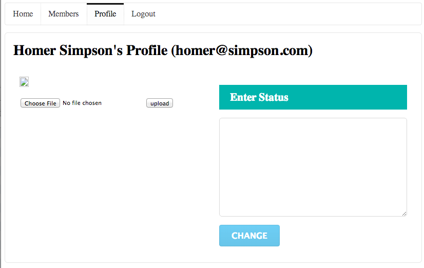
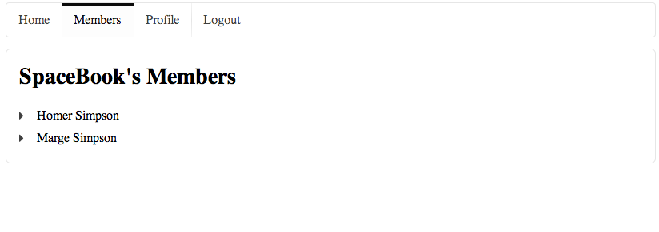
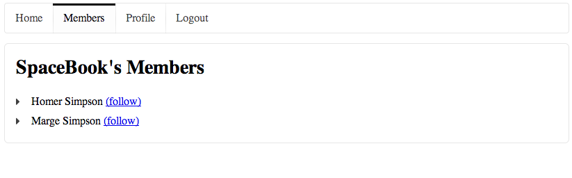
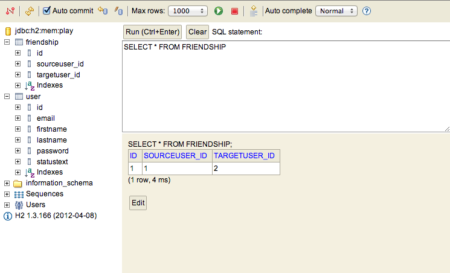
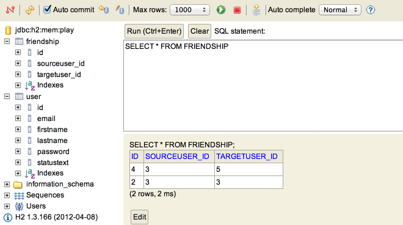

Show a list of live list of members on the service. Extend the User model to include a list of members being followed. Allow a user to 'friend' and and 'drop' other members
You should have a project from last weeks lab. If you dont have the project then this is a version (before the exercises) here
Change the Profile controller/view to display the currently logged in users full name (not just the first name).
Change the profile controller as follows:
public static void index()
{
String userId = session.get("logged_in_userid");
User user = User.findById(Long.parseLong(userId));
render(user);
}
Note we are passing the full user object to the view instead of just the name.
In views/Profile/index.html we can take advantage of this:
<h2 class="ui header">${user.firstName} ${user.lastName}'s Profile</h2>
In the user Profile view, see if you can figure out how to let the user see his/her email.
No need to change anything in the controllers/models - just append the email (in brackets) to the existing <h2>:
<h2 class="ui header">${user.firstName} ${user.lastName}'s Profile (${user.email})</h2>
Currently, every time we stop the application our database is cleared - and when we run again we have to register new users again. This can get tiresome and repetitive. Our framework comes with a simple mechanism for pre-loading our database if we want to hit the ground running with initial test data.
Create a file called 'data.yml' in the conf directory in the project, and incorporate the following contents into it:
User(homer):
firstName: Homer
lastName: Simpson
email: homer@simpson.com
password: secret
User(marge):
firstName: Marge
lastName: Simpson
email: marge@simpson.com
password: secret
Now create a new java class called 'Bootstrap' - directly in the the 'app' folder in your eclipse project. The class is to contain the following:
import java.util.List;
import play.*;
import play.jobs.*;
import play.test.*;
import models.*;
@OnApplicationStart
public class Bootstrap extends Job
{
public void doJob()
{
Fixtures.deleteDatabase();
Fixtures.loadModels("data.yml");
}
}
Proceed with this now if you have not already done so.
When you restart the app, these two users should be already registered, so you should be able to log in immediately.
If you log in to this user here:
and visit the 'profile' page, you should see a screen something like this:

Reflect again an the code behind this.
The model class User:
@Entity
public class User extends Model
{
public String firstName;
public String lastName;
public String email;
public String password;
public User(String firstName, String lastName, String email, String password)
{
this.firstName = firstName;
this.lastName = lastName;
this.email = email;
this.password = password;
}
public static User findByEmail(String email)
{
return find("email", email).first();
}
public boolean checkPassword(String password)
{
return this.password.equals(password);
}
}
The controller class Profile
public class Profile extends Controller
{
public static void index()
{
String userId = session.get("logged_in_userid");
User user = User.findById(Long.parseLong(userId));
render(user);
}
public static void changeStatus()
{
Logger.info("Status changed");
index();
}
}
and the corresponding view:
#{extends 'main.html' /}
#{set title:'Profile' /}
<nav class="ui menu">
<a class="ui item" href="/home">Home</a>
<a class="ui item" href="/members">Members</a>
<a class="ui active item" href="/profile">Profile</a>
<a class="ui item" href="/login">Logout</a>
</nav>
<section class="ui segment">
<h2 class="ui header">${user.firstName} ${user.lastName}'s Profile (${user.email})</h2>
<div class="ui two column grid segment">
<div class="ui row">
<div class="ui column">
<p>
<img src="images/homer.gif" />
</p>
<form action="homeprofile/upload" method="post" enctype="multipart/form-data">
<input type="file" name="userfile" value="" /> <input type="submit" name="submit" value="upload" />
</form>
</div>
<div class="ui column form segment">
<form action="/profile/changestatus" method="post">
<h3 class="ui inverted teal block header">Enter Status</h3>
<textarea class="ui field" name="profiletext"> </textarea>
<input class="ui blue button" type="submit" name="submit" value="Change" />
</form>
</div>
</div>
</div>
</section>
Locate these in eclipse now. We would like to extend this such that, if the user types something into the edit field, and presses 'change' - then the text entered will appear, just under the 'Status Text' header.
This will require four changes to our app.
First, we create a new member in the 'User' class to store the text - we will call it 'statusText'
public class User extends Model
{
//...
public String statusText;
//...
}
Make sure that there is a 'route' that maps the pressing of the change button to a method we will call 'changeText' in the HomeProfile class. This is via this new entry in the 'conf/routes' file:
POST /profile/changestatus Profile.changeStatus
(We already did this in an earlier lab)
Replace the changeStatus method in the Profile controller class with the following version:
public static void changeStatus(String profiletext)
{
String userId = session.get("logged_in_userid");
User user = User.findById(Long.parseLong(userId));
user.statusText = profiletext;
user.save();
Logger.info("Status changed to " + profiletext);
index();
}
Looking at the above method, we are doing the following:
In the Profile/index.html file, we will display the updated status text. Locate the second column here:
<div class="ui column form segment">
<form action="/profile/changestatus" method="post">
<h3 class="ui inverted teal block header">Enter Status</h3>
<textarea class="ui field" name="profiletext"> </textarea>
<input class="ui blue button" type="submit" name="submit" value="Change" />
</form>
</div>
and we insert new elements above the form to display the status for the user:
<div class="ui column form segment">
<h2 class="ui small header"> Status</h2>
<div class="ui green block label">
<p> ${user.statusText} </p>
</div>
<hr>
<form action="/profile/changestatus" method="post">
<h3 class="ui inverted teal block header">Enter Status</h3>
<textarea class="ui field" name="profiletext"> </textarea>
<input class="ui blue button" type="submit" name="submit" value="Change" />
</form>
</div>
Save all files in eclipse, and refresh the home profile page. Entering some text, pressing 'change', should cause the new message to be displayed above the email. Log out and log back in again. Verify that the status text 'persists' i.e. is the same as you left it before logging out.
In this step we would like to have the 'members' page display the actual members in the database. Currently this is a hard coded list of Simpsons:
...
<section class="ui segment">
<h2 class="ui header">SpaceBook's Members</h2>
<div class="ui list">
<div class="item">
<i class="right triangle icon"></i> marge [<a href="home.html">follow</a>]
</div>
<div class="item">
<i class="right triangle icon"></i> bart [<a href="home.html">follow</a>]
</div>
<div class="item">
<i class="right triangle icon"></i> lisa [<a href="home.html">follow</a>]
</div>
<div class="item">
<i class="right triangle icon"></i> maggie [<a href="home.html">follow</a>]
</div>
</div>
</section>
which is generated by 'app/controllers/Members.java' class:
public class Members extends Controller
{
public static void index()
{
render();
}
}
To display a list of the members, we will retrieve it from the Users database. Change the index() function above as follows:
public static void index()
{
List<User> users = User.findAll();
render(users);
}
In the view, replace the complete section with the following:
<section class="ui segment">
<h2 class="ui header">SpaceBook's Members</h2>
<div class="ui list">
#{list items:users, as:'user'}
<div class="item">
<i class="right triangle icon"></i>
<div class="content">
${user.firstName} ${user.lastName} <a href="/members/follow/${user.id}"> (follow) </a>
</div>
</div>
#{/list}
</div>
</section>
This is unusual syntax - it is not html, but rather what is called a templating language. In this case it is a way of writing a loop in a html-like notation, to read a list of users and display them inside a html list element. There are literally dozens of templating languages - this is a fairly simple one that comes with our play framework.
Save everything and visit the members page. You should see a list of users full names. Sign up a few new members, and verify that they appear in the members page.
Currently, our members page looks like this:

We would like it to look like this:

This is achieved by extending the list items in 'Views/members/index.html' with this element:
<a href="/members/follow/${user.id}"> (follow) </a>
Notice how the link appears in brackets after the users name, and refers to this route here:
href="/members/follow/${user.id}"
Can you figure our what is going on here? If you go back to the browser, and hover over the 'follow' links, you will see how the link is actually expanded with the user ids of each user inserted into each link. To see this, save everything in Eclipse, reload the browser, and hover over each of the 'follow' links in turn:
We need a 'route' in the 'conf/routes' files that maps this url:
GET /members/follow/{id} Members.follow
And we need a method in the Members controller to implement this route:
public static void follow(Long id)
{
Logger.info("Following " + id);
index();
}
Run the app now, and keep an eye on the console, you should see the IDs being 'followed' as expected.
Finally, we can use the id to lookup the users name, and log the name to the console. This a new version of follow():
public static void follow(Long id)
{
User userToFollow = User.findById(id);
Logger.info("Following " + userToFollow.firstName);
index();
}
Run this now, you should see the users first name logged.
We now have a mechanism whereby we can 'follow' another member. However, we would like to save this relationship to the database, so that we can list the members we are following on our home page.
In the models package, create new class called Friendship:
package models;
import javax.persistence.*;
import play.db.jpa.Model;
@Entity
public class Friendship extends Model
{
@ManyToOne()
public User sourceUser;
@ManyToOne()
public User targetUser;
public Friendship(User source, User target)
{
sourceUser = source;
targetUser = target;
}
}
This models a relationship between two users - a user who initiated the friendship (sourceUser) and the user he befriended (targerUser)
In order to save the list of followers, we need to establish a collection of these Friendship objects, and store this collection in our User class. Make the following changes to User.java.
Place these import statements alongside the other import statement at the top of the User.java class:
import java.util.List;
import java.util.ArrayList;
import javax.persistence.OneToMany;
Place this declaration in the User class, after the existing attributes:
//...
public String password;
public String statusText;
@OneToMany(mappedBy = "sourceUser")
public List<Friendship> friendships = new ArrayList<Friendship>();
public User(String firstName, String lastName, String email, String password)
{
//...
We also equip the User model class with two additional methods which will maintain this relationship:
public void befriend(User friend)
{
Friendship friendship = new Friendship(this, friend);
friendships.add(friendship);
friendship.save();
save();
}
public void unfriend(User friend)
{
Friendship thisFriendship = null;
for (Friendship friendship:friendships)
{
if (friendship.targetUser== friend)
{
thisFriendship = friendship;
}
}
friendships.remove(thisFriendship);
thisFriendship.delete();
save();
}
Back in the Members class, extend the 'follow' method to uses these new features of the User model:
public static void follow(Long id)
{
User friend = User.findById(id);
String userId = session.get("logged_in_userid");
User me = User.findById(Long.parseLong(userId));
me.befriend(friend);
index();
}
Because we have made a change to the database, we will need to completely restart the application again. i.e. Ctrl-C in the command prompt, and enter play run again.
Log in to spacebook as Homer, and see if you can 'Follow' marge. Although the UI doesnt show any signs of the friendship having been established, you should be able to see it by browsing the database:

Our home page currently has a list of members we are following 'hard-coded' in 'views/home/index.html':
<div class="ui column">
<h2>Friends</h2>
<div class="ui list">
<div class="item">
<i class="right triangle icon"></i> <a href="/publicprofile/marge">marge</a>, (<a href="drop/marge">drop</a>)
</div>
<div class="item">
<i class="right triangle icon"></i> <a href="/publicprofile/lisa">lisa</a>, (<a href="drop/lisa">drop</a>)
</div>
</div>
</div>
We have already done something like what we want to do in step 04: i.e. display a list of names, retrieved from the database.
Replace this section with the following:
<h2>Friends</h2>
<div class="ui list">
#{list items:user.friendships, as:'friendship'}
<div class="item">
<i class="right triangle icon"></i>
<div class="content">
${friendship.targetUser.firstName} ${friendship.targetUser.lastName}
</div>
</div>
#{/list}
</div>
~~~
(try to keep the indentation consistent).
Save everything in Eclipse, and refresh your home page. The 'Following' list is now dynamically generated.
Note the connection between this method in the Home class:
~~~Java
public static void index()
{
String userId = session.get("logged_in_userid");
User user = User.findById(Long.parseLong(userId));
render(user);
}
... and this template code:
#{list items:user.friendships, as:'friendship'}
<div class="item">
<i class="right triangle icon"></i>
<div class="content">
${friendship.targetUser.firstName} ${friendship.targetUser.lastName}
</div>
</div>
#{/list}
In particular, as the User class now has a member called 'friendships' - we are just passing the currently logged in 'user' to the render method, which passes this on to the view. In the view, we just iterate through the friendship member of the user object we receive. This looks confusing at first, but it is reasonably straightforward and predictable once you get used to it.
Experiment with signing up more members, logging in, and watching the list of friends growing.
Also, keep an eye on the database. See if you can make sense of the contents of the friendships table.
You may have parts of this already implemented in an exercise in an earlier lab. If not, them introduce (or change) these features now:
In the Home controller we need an action to be called if a friend is to be dropped:
public static void drop(Long id)
{
Logger.info("Dropping " + name);
index();
}
..and this is the corresponding entry in the 'conf/routes file:
GET /home/drop/{id} Home.drop
Here is what we would like to do now:
Here is new link to be displayed after each friends' name in views/Home/index.html:
(<a href="/home/drop/${friendship.targetUser.id}"> drop </a>)
Here is a drop implementation that deletes the friendship:
public static void drop(Long id)
{
String userId = session.get("logged_in_userid");
User user = User.findById(Long.parseLong(userId));
User friend = User.findById(id);
user.unfriend(friend);
Logger.info("Dropping " + friend.email);
index();
}
The pattern in the above should start to become familiar. First we find out who is logged in:
String userId = session.get("logged_in_userid");
User user = User.findById(Long.parseLong(userId));
Then we find out which user is about to be dropped:
User friend = User.findById(id);
We then remove the user from the logged in users following list (and we save the user as we have changed something):
user.unfriend(friend);
Finally, we log what has just happened, and refresh the view:
Logger.info("Dropping " + friend.email);
index();
Save everything in Eclipse and try this out now. Whenever you make significant changes, it is often best to restart the app.
You should be able to add and remove users from the 'following' list.
In views/Home/index.html we are listing the friends for the current user:
#{list items:user.friendships, as:'friendship'}
<div class="item">
<i class="right triangle icon"></i>
<div class="content">
${friendship.targetUser.firstName} ${friendship.targetUser.lastName}
(<a href="/home/drop/${friendship.targetUser.id}"> drop </a>)
</div>
</div>
#{/list}
Here we display the name of the member we are following, and a link to 'drop' the member. However, we do not associate a link to the members profile page. We can do this now. Rework the friends name as follows:
<a href=""> ${friendship.targetUser.firstName} ${friendship.targetUser.lastName}</a>
Note that we have made the members name a link. Refresh the browser to see the change: However, if we click on the link it does not take us anywhere, as the 'href' attribute has been left blank (try it). We will fix this now.
The first step will be to change the 'route' from being based on a string (representing the user name) to using the user id. This is a more robust and reliable mechanism. Change the parameter name to 'id':
# Profiles
GET /publicprofile/{id} PublicProfile.visit
... and then change the visit method in PublicProfile controller to take this id parameter instead:
public static void visit(Long id)
{
Logger.info("Just visiting the page for " + id);
// render(name);
}
We commented out the call to render for the moment.
Now, returning to 'views/Home/index.html', we can examine again our link (currently blank):
<div class="item">
<i class="right triangle icon"></i>
<div class="content">
<a href=""> ${friendship.targetUser.firstName} ${friendship.targetUser.lastName}</a>
(<a href="/home/drop/${friendship.targetUser.id}"> drop </a>)
</div>
</div>
... and introduce a url to the method we have just modified:
<div class="item">
<i class="right triangle icon"></i>
<div class="content">
<a href="/publicprofile/${friendship.targetUser.id}"> ${friendship.targetUser.firstName} ${friendship.targetUser.lastName}</a>
(<a href="/home/drop/${friendship.targetUser.id}"> drop </a>)
</div>
</div>
Try these links now (the links to the friends on the home page). You should see a blank page.
Now we try to further evolve the 'UserProfile' class to somehow render information about the requested user - i.e. the user whose ID is passed as a parameter to the visit method.
The first step will be to see if we can use the id passed as a parameter to visit to retrieve user information from the database. This is relatively straightforward:
public static void visit(Long id)
{
User user = User.findById(id);
Logger.info("Just visiting the page for " + user.firstName + ' ' + user.lastName );
//render(name);
}
In this code, we are asking the User model for a User object that matches the id:
User user = User.findById(id);
...and then we log the first and last names in this object to the console:
Logger.info("Just visiting the page for " + user.firstName + ' ' + user.lastName );
Save the java source, reload the page, and verify that when you click on the user in the home page a log message is displayed as expected:
13:14:25,183 INFO ~ Just visiting the page for Marge Simpson
We can now attempt to pass this user object to the render method:
render(user);
Save everything, and browse to the friend from the home page again:
Note that many of the details are missing/incorrect. We will not be able to fix all of these yet (pictures or messages are not modeled in our database yet), however we should be able to display the users correct name, and perhaps their current status string.
First the users name - this is currently rendered in the banner:
<div class="ui small header"> ${name}'s Profile</div>
This should be changed to:
<div class="ui small header"> ${user.firstName} ${user.lastName}'s Profile</div>
We can also extend the view to also display the users status message. Insert a paragraph to show the status text just below the image:
<p> ${user.statusText} </p>
Save and reload the profile page. There may not be a status message for this user, so logout, log in as the friend, change the status, and then log in as homer again and see if the status is being displayed. You should eventually see the message displayed
There are two major features remaining:
If we can integrate these two capabilities, then we will have completed a functioning 'dynamic' version of our static web site. i.e. we will have built a 'web app'.
Currently, when you follow a member there is not obvious change on the screen. i.e. you remain on the members page.
public static void follow(Long id)
{
User userToFollow = User.findById(id);
String userId = session.get("logged_in_userid");
User user = User.findById(Long.parseLong(userId));
user.following.add(userToFollow);
user.save();
index();
}
Change this such that when you follow a member, the home page is displayed immediately - where the new entry in the 'following' list should appear. Hint: You will have to call the index() method on the Home class (instead of the Members class as currently)
Is there a way we can display the number of friends we have on the home screen - perhaps in brackets after the 'Friends' text.
Recall that we are accessing the followers list in the 'home/index.html' view:
<h4>Friends</h4>
<ul>
#{list items:user.friendships, as:'friendship'}
<li>
${friendship.targetUser.firstName} ${friendship.targetUser.lastName} (<a href="/home/drop/${friendship.targetUser.id}"> drop </a>)
</li>
#{/list}
</ul>
'user.friends' is the list friends, and 'user.friends.size()' will retrieve the number of entries in this list. In order to use this in a html element, you would need to surround it with ${...}, as in: '${user.friends.size()}
Explore the database admin interface again:
In particular, look at how the friendship list is represented:

See if you can figure out how you can use this interface to make changes to the friends list, and verify that these changes appear on the home page. In particular, see if you can have two browser windows open - one with a logged in user, and one with the db interface. Make changes on the db, and see if a refresh on the logged in home page occurs immediately (after pressing refresh).